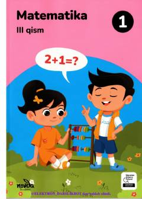

1M1-sinf o'quvchilari uchun matematika fanidan uchinchi qism darslik.
Mazkur darslik umumiy o'rta ta'lim maktablarining 1-sinf o'quvchilari uchun mo'ljallangan bo'lib, matematika fanidan bilimlarni chuqurlashtirishga xizmat qiladi. Uchinchi qism asosan masalalar va ularning turlari, shart, savol, yechim tushunchalari hamda mantiqiy masalalarga bag'ishlangan.